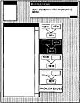
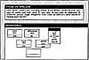
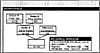

by Abraham Kandel
CRC Press, CRC Press LLC
ISBN: 084934297x Pub Date: 11/01/91
|
|
Fuzzy Expert Systems
by Abraham Kandel CRC Press, CRC Press LLC ISBN: 084934297x Pub Date: 11/01/91 |
| Previous | Table of Contents | Next |
Other decisions made by the lesson planner also determine the particular version of Show Me that will be implemented. Different versions are created, depending upon whether the system is intending to promote novice mastery or expertise. In general, when novice mastery is the goal, students receive easier problems that are isomorphic or very similar to those demonstrated by the expert. Also, the lesson provides a great deal of scaffolding4,17 in the sense that more graphic reification is supplied during problem solving. In addition, the lesson planner informs the intervening monitor that the student is a novice, as the monitor also varies its coaching strategy accordingly. However, when the goal is development of expertise, there is less reliance on graphic scaffolding. Also, the coach is more withdrawn, to encourage more discovery learning and self-checking. Moreover, students are given more difficult problems that are structurally different from those demonstrated by the expert, for the purpose of promoting transfer. Also, the tutor may request that the student study and develop alternative solutions and strategies for the same problem.
Once the lesson is planned, the tutor presents a problem representing a middle level of difficulty, based on the range in the problem set that has been selected for that student. (Thus, the lesson can be modified simply by increasing or decreasing the difficulty of the next problem.) Then, control is passed to the intervening monitor, designed to observe the student’s performance and make specific tutorial interventions.
The many instances where the planners’ knowledge of the student is uncertain and fuzzy is obvious. Details of this are discussed in Sections VIII. and IX. which deal with the student record, which stores and manipulates such knowledge, and the tutor, which seeks to implement and assist with the plans.
A typical screen layout for the Show Me routine is shown in Figures 2, 3, and 4. Although the system is designed to be used with any age audience, the primary user of this system will be in the fourth to seventh grade age group. Thus, a text-based interface would be cumbersome, so we chose to use menus, windows, icons, graphics, and a mouse, supported by the observation that humans acquire graphic information at a substantially higher rate than text-based information.21 The student can click on sets, schema icons, and operators to instantiate schemas. Anderson et al.1 found that this approach decreases significantly the number of typographical errors.
Another observation concerning the interface4,27 is that reification can be a very effective tool for tutoring. Graphics, especially the sophisticated version available on the Xerox LISP machine we are using, make the implementation of reification for our domain very effective. In the Show Me routine, various interface tools are used by the expert and the student to build problem solutions as trees.
Menu selections are used in the Help window to avoid time-consuming and complex natural language understanding. However, we allow the student to type in a question if nothing on the menu captures his or her uncertainty. In the manner of Lesgold,13 this will be saved and analyzed later and, if necessary, an entry added to the menu. Also, the format of how the messages will be presented will vary with the age of the student. For example, a fourth grade student may be more motivated by a familiar cartoon character giving a bubble-style message than a rectangular window-type message.

Figure 2 Show me window — schema building boxes.

Figure 3 Show me window — label selection.

Figure 4 Show me window — tutoring message.
This implementation consists of templates to represent the large number of word problems that are needed for tutoring. Templates include semantic and syntactic parses, schemas used by the system, and other information about the problem set that can be represented in this format. Using instantiated templates and a system dictionary, the system is able to generate large numbers of problems. This approach will significantly increase the speed of the final system as well as decrease the amount of storage required. Problems can individualize the system by reflecting the student’s interests and preferences. This should prove helpful in generating problems interesting to particular student groups, such as females, that are not highly motivated to do mathematics.
The solutions module contains the major problem-solving expertise of the system. It constructs a tree of the solution or solutions (many problems have several solutions) from the semantic information and schemas passed to it from the problem generator. The tutor refers to this tree both as a guide in identifying where the student is in his progress and where he should be. The expertise involved in this module consists of the ability to identify how the various schemas or subtrees are interrelated. Interrelationship is established through sets which are used in more than one schema. Each schema consists of a set of nodes which can be represented as a subtree. If the root node of the schema subtree is not the goal of the problem, then it must be a leaf node of some higher order (in the tree) schema. Figure 5 shows the tree of solutions for the car problem.
The expert module is based on an object-oriented approach and is implemented using a hierarchical layering technique with the following levels: general problem-solving level, tree management and pattern matching level, application domain level, and data structure level. Key word paths are used to traverse the hierarchy. The intervening monitor works closely with the expert and the detailed tree it produces. It is the detailed information stored here which allows the tutoring of the student.
The student record (SR) in this ITS is the student knowledge model, i.e., it represents the knowledge the system has about the student. In extant systems,27 this information is generic in that only information on general student types is stored. In the TAPS system a holistic view of each individual student is stored, allowing the tutor to be highly individualized. This is accomplished through the use of a fuzzy temporal relational data base (FFRDB). This approach to knowledge modeling differs from its predecessors in several significant ways.
| Previous | Table of Contents | Next |
){kind=link}
){kind=link}
){kind=link}